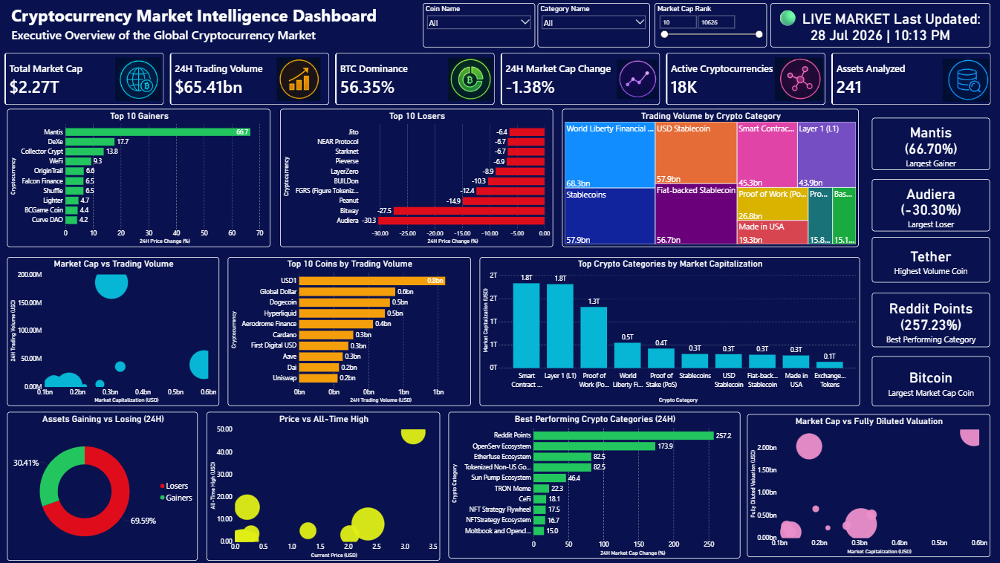
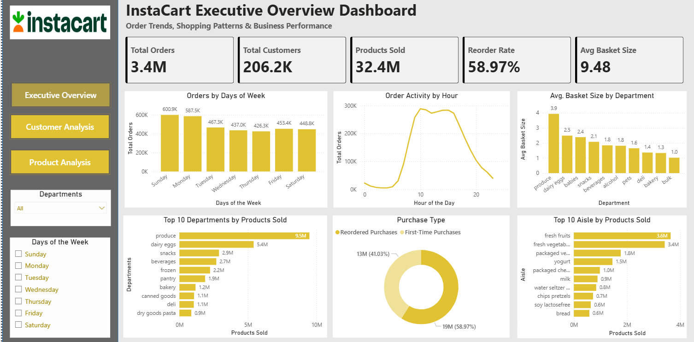
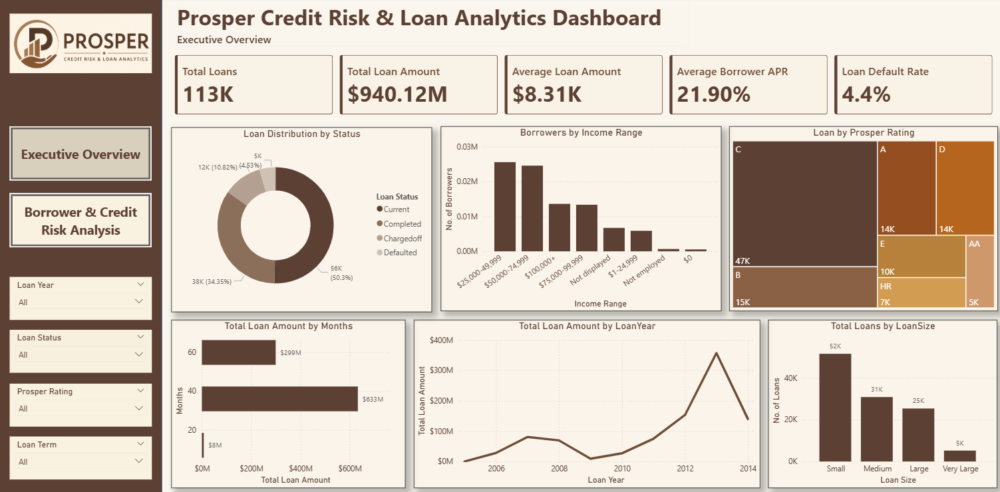
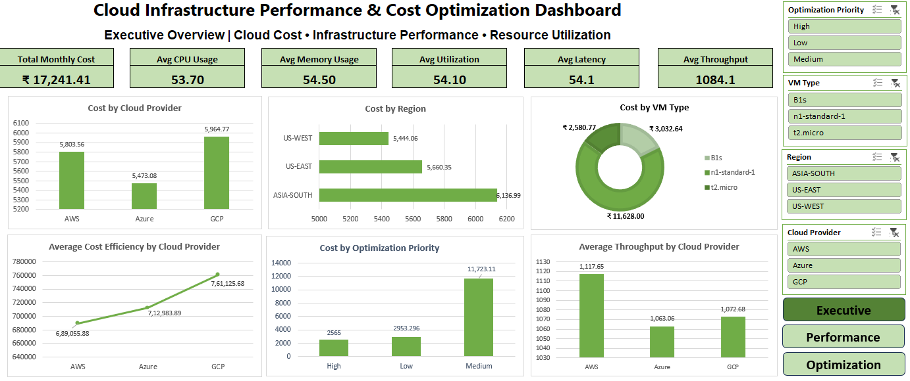
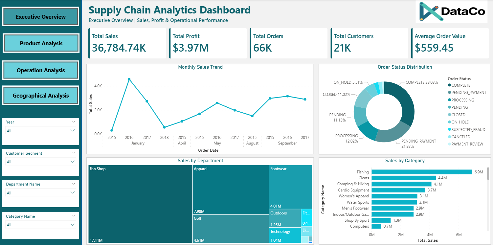
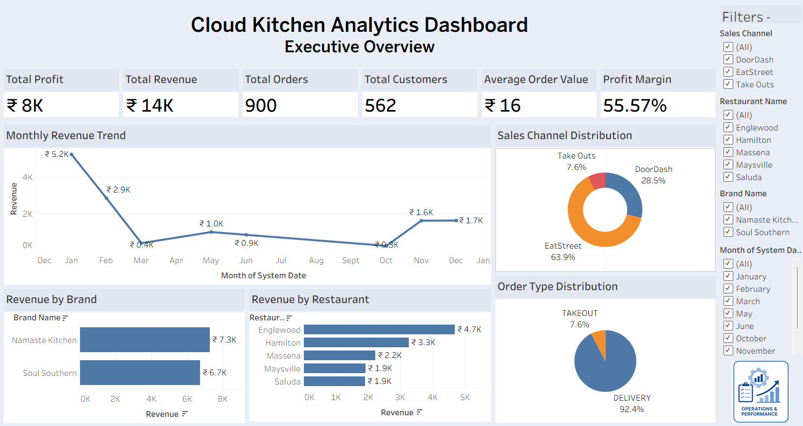
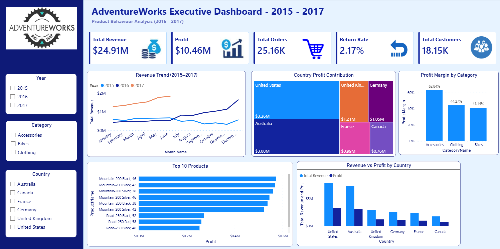

Page 1 of 1
Transforming Complex Data into Actionable Business Insights. Undergraduate engineer building modern business intelligence dashboards and statistical systems. Experienced in cleaning multi-million record datasets, performing target business analytics, and optimizing decision frameworks.
I am a Computer Science Engineering (Artificial Intelligence & Machine Learning) undergraduate student at Rajarambapu Institute of Technology, minoring in New Product Design and Development. My academic and practical experience is focused on building analytical solutions that turn unstructured data into interactive dashboards and clear insights.
Rather than simply placing charts on a page, I structure SQL relational databases, clean datasets using Python, and construct Power BI or Tableau interfaces with explicit financial, logistical, and operational KPIs in mind. Through research projects and virtual internships with top global firms, I have refined my ability to look at data through a strict business lens.
Practical expertise spanning databases, statistical analysis, and modern reporting platforms.
Explore end-to-end analytical solutions built to solve distinct operational challenges.







Practical analyst experience completed through structured corporate job simulations.
Contributing peer-reviewed research mapping artificial intelligence into real-world infrastructure.
Presented at the 6th International Conference on Recent Trends in Engineering Technology and Management (ICRETM 2026).
The research paper has been successfully presented at the conference and is scheduled to be published in the conference proceedings, which will subsequently be indexed on Google Scholar.
I am currently seeking opportunities to join an analytical team where I can apply my SQL, Python, Power BI, and Tableau capabilities. Let's discuss how my analytical workflows can support your operations.